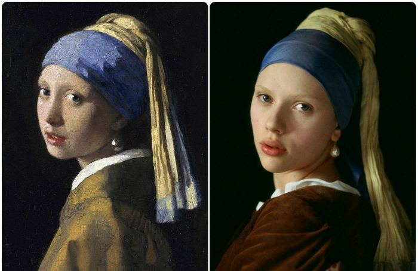

Фильмы
- Кабаре
- Жизнь как чудо
- Девушка с жемчужной серьгой
Боб Фосс, "Кабаре"
Главная героиня, певица кабаре - интуитивно-этический экстраверт (Гексли).
Эмир Кустурица, "Жизнь как чудо"
Лука – чудаковатый инженер, который строит тоннель между Балканами и остальным миром. Его жена Ядранка - душевнобольная певица. Их сын Милош мечтает стать футболистом, но у него нет способностей к игре. Семья постепенно распадается: жена убегает, сына забирают в армию, отец по-прежнему поглощен тоннелем. Что ожидает их в будущем - неизвестно.
Фильм по новелле Трейси Шевелье "Девушка с жемчужной серьгой"

Девушка с жемчугом Сережка - драматический фильм 2003 года режиссера Питера Уэббера . Сценарий был адаптирован сценаристом Оливией Хетрид из одноименного романа 1999 года автора Трейси Шевалье.
© 2012 moyacinoshka